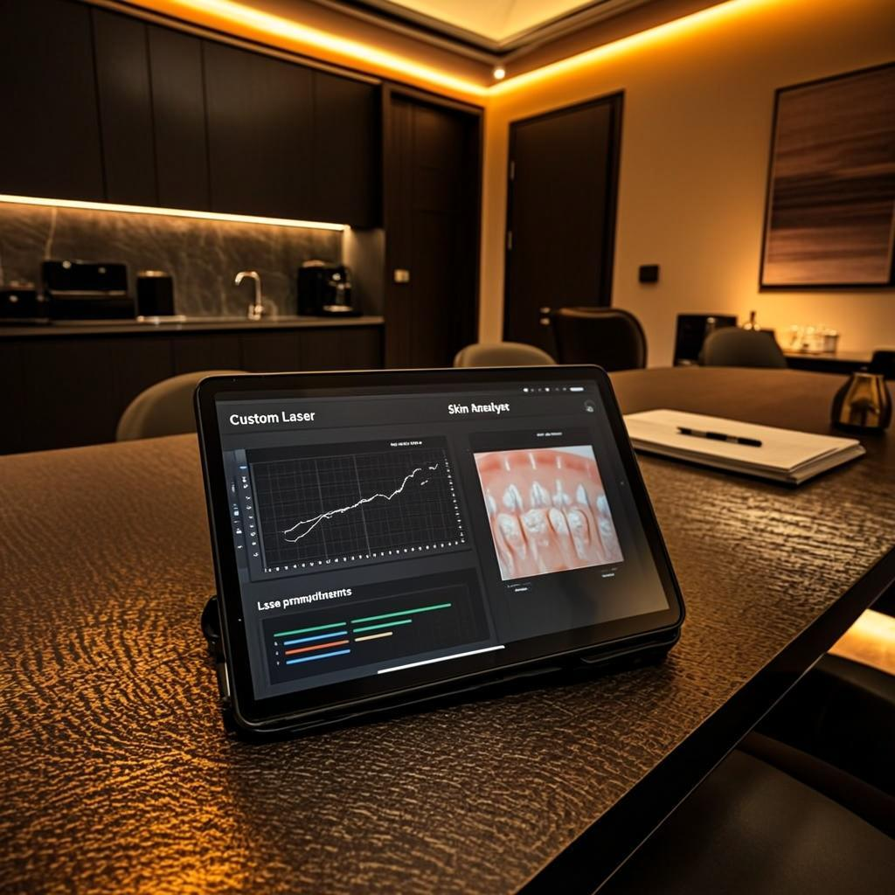
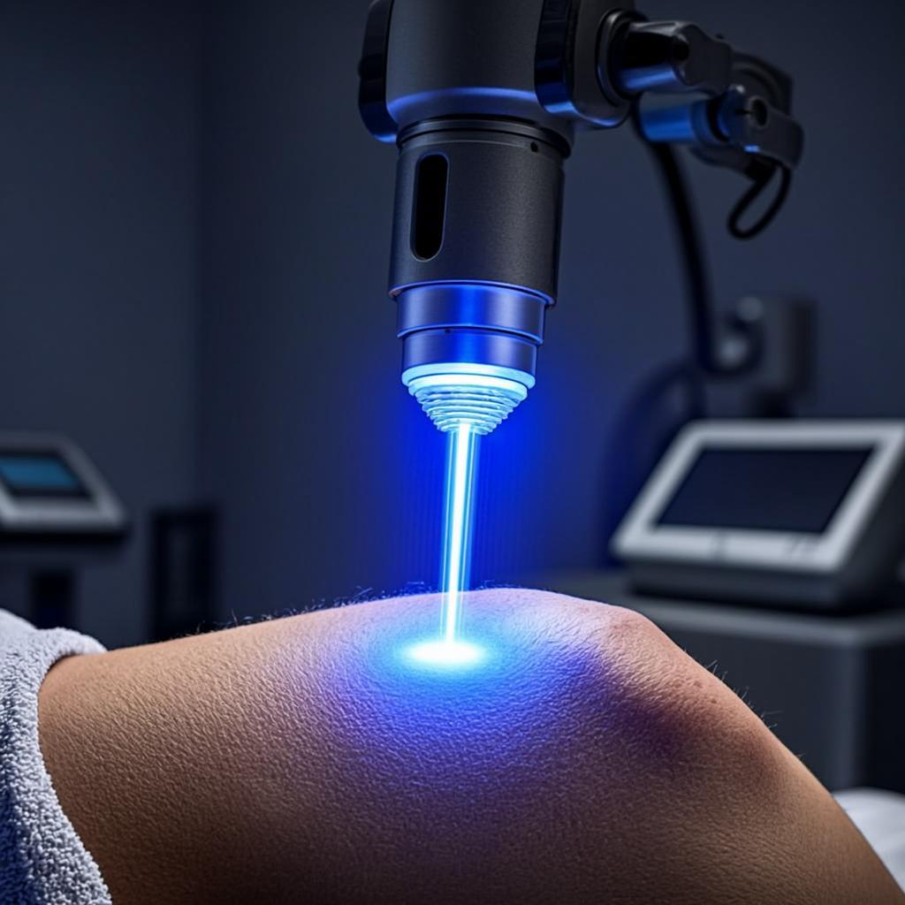

We've refined our process to deliver exceptional results with maximum comfort and care at every stage. Here's exactly what to expect from start to finish.
Your journey begins with a thorough, no-obligation consultation where we assess your tattoo, skin type, and personal goals in detail. We carefully evaluate ink depth, color composition, and the age of your tattoo to determine the most effective removal approach. Our specialists also review your medical history to ensure the treatment is safe and suitable for your unique situation. This in-depth assessment allows us to set realistic expectations and answer all of your questions upfront. There is absolutely no pressure — just honest, expert guidance tailored to you.

Based on your consultation, we create a personalized treatment plan with realistic timelines tailored specifically to your tattoo and skin profile. You'll know the estimated number of sessions, the total cost, and the expected results before committing to anything. We factor in ink type, placement, your skin's healing capacity, and any previous treatments to optimize every session for maximum ink clearance. Our transparent approach means no hidden costs or surprise timelines — just a clear, structured roadmap to the results you want. We adjust the plan as needed throughout your treatment to ensure the best possible outcome.

During each session, our certified specialists use state-of-the-art PicoSure and dual-wavelength laser technology to precisely target and shatter ink particles beneath the skin. Our advanced built-in cooling system keeps your skin comfortable throughout the procedure, significantly reducing heat and discomfort. We also offer professional numbing options for those with lower pain tolerance, ensuring the experience is as pleasant as it is effective. Each treatment is carefully calibrated for your skin tone and ink characteristics to maximize ink breakdown while protecting surrounding tissue. Sessions typically last between 15 and 45 minutes depending on the size and complexity of the tattoo.
Over the course of your treatment plan, you'll witness progressive fading as your body's immune system naturally clears the shattered ink particles. Most clients see significant and noticeable results after just 3 to 5 treatments, with continued improvement after each session. We provide detailed aftercare instructions for every stage of healing to ensure optimal results and minimal downtime between sessions. Our team monitors your progress closely, making adjustments to ensure the final outcome meets or exceeds your expectations. The result is clearer, smoother skin and the confidence that comes with it.
Understanding your tattoo's unique characteristics helps us customize the removal process for faster, more effective results. Not all tattoos are created equal — here's how different factors influence your treatment plan.
Dark inks such as black and dark blue absorb laser energy most efficiently, making them the fastest colors to break down and clear from the skin. Red, orange, and yellow pigments also respond well to treatment, typically showing noticeable fading after just a few sessions. Green and blue inks require specific wavelengths that target their unique molecular structure, which may extend the overall treatment timeline. White and pastel inks can be trickier to remove because they sometimes contain titanium dioxide, which can darken when hit by laser energy before it begins to fade. UV and glow-in-the-dark inks require special protocols and careful wavelength selection to address their distinctive chemical compositions safely.
Professional tattoos deposit ink deeper into the dermis with consistent, even saturation, which means they generally require more sessions to fully clear as the laser must reach those deeper ink deposits layer by layer. Amateur or hand-poked tattoos are typically shallower with inconsistent ink distribution, causing them to fade faster and often requiring fewer treatments overall. Cover-up tattoos present a unique challenge because they contain layered ink — the original tattoo underneath plus the new artwork on top — which requires additional treatments to address each layer of pigment. The overall density of the ink also plays a significant role; a heavily saturated tribal piece will naturally take longer than a fine-line design with minimal ink. During your consultation, we carefully evaluate these depth and density factors to build an accurate and realistic treatment timeline.
Older tattoos have already begun a natural fading process as your immune system slowly breaks down and disperses the ink particles over time, giving the laser a head start on removal. Newer tattoos contain fresh, dense pigment that is tightly packed in the skin, requiring more energy and more sessions to achieve the same level of fading. As a general guideline, a 10-year-old tattoo may need approximately 30% fewer sessions than a 1-year-old one because the ink has already spread and diminished naturally. However, even very old tattoos can still contain significant pigment that requires professional treatment to fully eliminate. We always assess the current state of the ink rather than relying solely on age, since factors like sun exposure and skin type also affect how much a tattoo has naturally faded.
Areas of the body with greater blood circulation and lymphatic activity — such as the neck, face, and upper chest — tend to clear fragmented ink particles more quickly after each laser session. Conversely, areas with less blood flow like the ankles, fingers, toes, and lower legs take longer to naturally flush out the shattered ink, extending the time between visible results. Sun-exposed areas such as the forearms and shoulders may have additional considerations, as cumulative UV damage can affect how the skin responds to laser treatment and heals between sessions. The thickness and type of skin in different body regions also influence treatment parameters, since thinner skin requires more delicate settings while thicker skin can tolerate higher energy levels. We factor all of these anatomical considerations into your personalized plan to optimize both safety and effectiveness.
Understanding what happens at every stage of your treatment helps you feel prepared, confident, and relaxed throughout the entire process.
Avoid sun exposure and tanning for at least two weeks prior to your appointment to minimize the risk of pigmentation changes and ensure the laser works effectively. Shave the treatment area the day before your session so the laser can target the ink directly without interference from hair. Stay well-hydrated in the days leading up to your appointment, as hydrated skin responds better to laser treatment and recovers more quickly. Avoid blood-thinning medications, alcohol, and anti-inflammatory supplements for 24 to 48 hours before your session to reduce the chance of bruising. Wear comfortable, loose-fitting clothing that allows easy access to the treatment area on the day of your appointment.
Your specialist will cleanse the treatment area and apply protective eyewear before beginning the laser session. You may feel a series of quick, snapping sensations against the skin — most clients describe it as similar to a rubber band flick, which is well-tolerated by the vast majority of people. Our advanced cooling system delivers continuous cold air to the skin surface during treatment, dramatically reducing discomfort and protecting the epidermis from thermal damage. If you've opted for numbing cream, it will be applied 30 minutes before the session to further minimize any sensation. Each pulse of the laser is precisely controlled by your specialist to ensure optimal ink targeting while keeping surrounding tissue safe and undisturbed.
Immediately after your session, the treated area may appear red and slightly swollen — this is a completely normal inflammatory response and typically subsides within 24 to 48 hours. You may notice small blisters or scabbing as the skin heals, which is a natural part of the body's ink-clearing process and should never be picked or scratched. Keep the area clean and apply the prescribed antibiotic ointment to prevent infection and promote faster healing between sessions. Avoid intense exercise, hot showers, saunas, and swimming for at least 48 hours to prevent irritation and complications. Your specialist will schedule a follow-up appointment 6 to 8 weeks later, allowing your body sufficient time to naturally eliminate the fragmented ink particles before the next treatment.
Proper aftercare is essential for achieving the best possible results. Follow these expert tips to speed up healing and maximize ink clearance between sessions.
Gently wash the treated area with lukewarm water and a mild, fragrance-free soap twice daily. Apply a thin layer of the antibiotic ointment recommended by your specialist for the first few days, then switch to an unscented moisturizer. Keeping the area properly hydrated prevents scab cracking and promotes faster, smoother healing without complications.
UV rays can cause hyperpigmentation and interfere with the healing process, potentially leading to permanent skin discoloration in the treated area. Keep the area completely covered with clothing or a broad-spectrum SPF 50+ sunscreen whenever you go outdoors. Continue sun protection for at least 3 months after your final session for the best cosmetic outcome.
Drinking plenty of water helps your lymphatic system flush out fragmented ink particles more efficiently, accelerating the fading process between sessions. Aim for at least 8 glasses of water daily and prioritize quality sleep to support your body's natural healing and immune function. A well-rested, well-hydrated body simply recovers faster and produces better results.
It's normal for the treated area to blister, scab, or peel as part of the natural healing process — resist the urge to pick, scratch, or peel any of it away. Interfering with scabs can lead to scarring, infection, and uneven ink removal, which may require additional sessions to correct. Let the skin shed naturally on its own timeline for the smoothest possible result.
Chlorinated pools, hot tubs, and natural bodies of water can introduce bacteria to the healing skin and significantly increase the risk of infection. Saunas and steam rooms raise your skin temperature and can worsen inflammation, delaying the healing process. Avoid all of these for at least 2 to 3 weeks after each treatment session until the skin has fully closed and healed.
Vigorous physical activity increases blood flow and body heat, which can worsen swelling, irritation, and discomfort in the treated area. Take it easy for the first 48 hours after treatment, then gradually resume light activities as tolerated. If the treated area is on a high-friction zone, consider additional protection during workouts until fully healed.
Book a free consultation today and let our experts create a personalized treatment plan just for you. No pressure, no obligation — just honest, expert guidance.